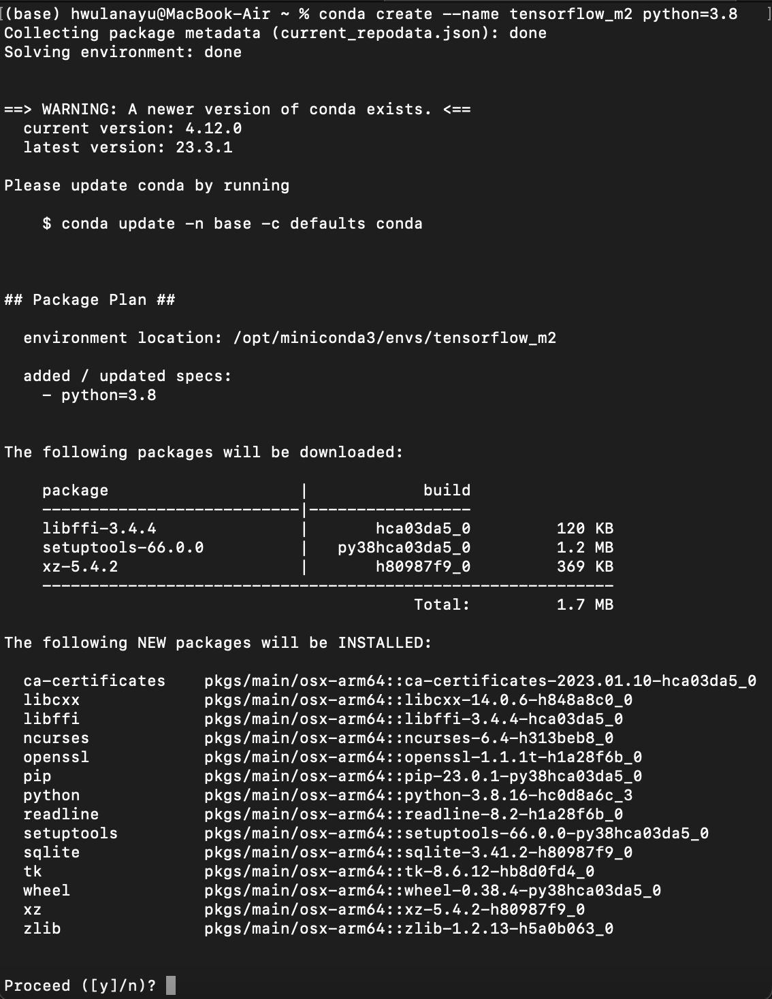
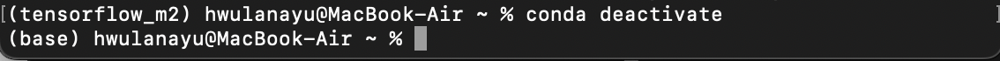
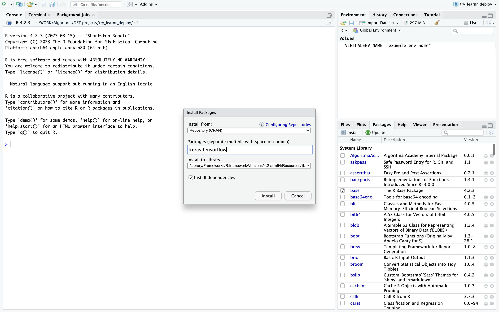
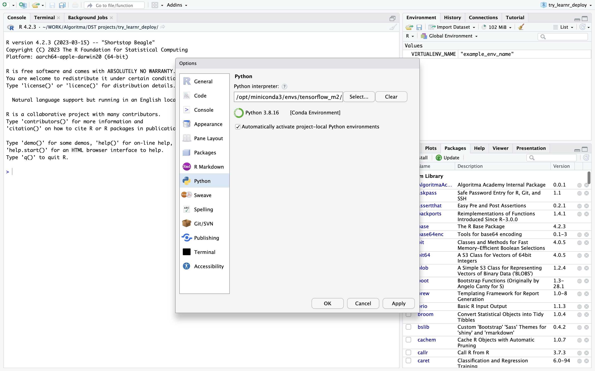

Tensorflow Apple Chip Installation
for M1 and M2 chip with Python and R programming language
Contents:
This documentation was compiled on May 25, 2023. Please refer to the reference link if there is an update from the Apple Developer.
Contents:
For Python Miniconda/Miniforge Environment
1. Homebrew Installation
Make sure install the Homebrew on your mac. Open your terminal (f4 + “Terminal”) and paste this command:
/bin/bash -c "$(curl -fsSL https://raw.githubusercontent.com/Homebrew/install/HEAD/install.sh)"
Homebrew simplifies the installation of software on Apple’s operating system, macOS, as well as Linux.
Official Documentation: homebrew
2. Xcode Installation
Check on your mac if Xcode Command Line already installed. If not, you can paste this command on Terminal:
xcode-select --install
Xcode Command Line Tools are an additional install which allows to compile applications from the command line (instead of using the Xcode application).
3. Miniforge/Miniconda Installation
Install miniforge for arm64 (Apple Silicon). Miniforge enables installing python packages natively compiled for Apple Silicon.
Note: If you already installed Anaconda Package Manager, uninstall it to avoid further errors. You can paste this code one-by-one on your Terminal:
conda install anaconda-clean
anaconda-clean --yes
sudo rm -rf /anaconda3
Try this one if command above is not succesfull:
sudo rm -rf anaconda3
sudo rm -rf ~/anaconda3
sudo rm -rf ~/opt/anaconda3
Further reference to uninstall Anaconda on macOS
Install miniforge. Download the Miniconda3 macOS Apple M1 64-bit pkg.
Close your Terminal and open the new one. Make sure your miniconda installed correctly. By default, miniconda gives you base environment.

4. Create Virtual Environment
Create a virtual environment named tensorflow_m2 or anything, really, with python3.8 or 3.9 or 3.10 installed.
conda create --name <YOUR_VIRTUAL_ENV_NAME> python=<PYTHON_VERSION>
Example:
conda create --name tensorflow_m2 python=3.8

type y and enter.
Activate your virtual environment with this command:
conda activate <YOUR_VIRTUAL_ENV_NAME>
example:
conda activate tensorflow_m2

5. Installing Tensorflow-MacOS libraries
This is the crucial step especially with the library version. You have to specifically list the exact version or your tensorflow wont run correctly.
Choose one set that does not output an error:
conda install -c apple tensorflow-deps==2.10.0
python -m pip install tensorflow-macos==2.10.0
python -m pip install tensorflow-metal==0.6.0
or
conda install -c apple tensorflow-deps==2.9.0
python -m pip install tensorflow-macos==2.9.0
python -m pip install tensorflow-metal==0.5.0
After installation above, check the package/library version with this command:
python --version
conda list|grep -E '(tensorflow|numpy)'

Make sure there’s numpy library on your environment.
6. Jupyter Notebook Installation
Back to your conda base environment with this command:
conda deactivate

Check if jupyter notebook already installed on your base env.
pip list
or
conda list
output example:
...
jupyter-client 7.3.4
jupyter_core 5.3.0
jupyter-events 0.6.3
jupyter-server 1.23.6
jupyter_server_terminals 0.4.4
jupyterlab-pygments 0.2.2
...
If jupyter notebook note installed yet, install it with this command:
pip install notebook
Now that you already have jupyter notebook on base environment, activate the virtual environment that has the tensorflow library installed.
conda activate tensorflow_m2
Install ipykernel and pandas on virtual environment:
pip install pandas ipykernel
Create new kernel with this command:
python -m ipykernel install --user --name=<YOUR_KERNEL_NAME>
example:
python -m ipykernel install --user --name=tensorflow_m2

Back to your base environment and type jupyter notebook on your terminal. It will open a localhost browser tab.

Create New Notebook with the new kernel.
On upper right jupyter notebook localhost, click New button, select the kernel that has tensorflow installed on its environment. On your new notebook, import TensorFlow and paste this code:
import tensorflow as tf
print("Num GPUs Available: ", len(tf.config.experimental.list_physical_devices('GPU')))
Expected output:
Num GPUs Available: 1
7. Verify Installation
From Official Documentation, you can verify using this simple script:
import tensorflow as tf
cifar = tf.keras.datasets.cifar100
(x_train, y_train), (x_test, y_test) = cifar.load_data()
model = tf.keras.applications.ResNet50(
include_top=True,
weights=None,
input_shape=(32, 32, 3),
classes=100,)
loss_fn = tf.keras.losses.SparseCategoricalCrossentropy(from_logits=True)
model.compile(optimizer="adam", loss=loss_fn, metrics=["accuracy"])
model.fit(x_train, y_train, epochs=5, batch_size=64)
Expected output:
Metal device set to: Apple M1
2023-05-25 19:08:54.776001: I tensorflow/core/common_runtime/pluggable_device/pluggable_device_factory.cc:305] Could not identify NUMA node of platform GPU ID 0, defaulting to 0. Your kernel may not have been built with NUMA support.
2023-05-25 19:08:54.776164: I tensorflow/core/common_runtime/pluggable_device/pluggable_device_factory.cc:271] Created TensorFlow device (/job:localhost/replica:0/task:0/device:GPU:0 with 0 MB memory) -> physical PluggableDevice (device: 0, name: METAL, pci bus id: <undefined>)
Epoch 1/5
2023-05-25 19:08:55.767384: W tensorflow/core/platform/profile_utils/cpu_utils.cc:128] Failed to get CPU frequency: 0 Hz
/opt/miniconda3/envs/tensorflow_m2/lib/python3.8/site-packages/tensorflow/python/util/dispatch.py:1082: UserWarning: "`sparse_categorical_crossentropy` received `from_logits=True`, but the `output` argument was produced by a sigmoid or softmax activation and thus does not represent logits. Was this intended?"
return dispatch_target(*args, **kwargs)
2023-05-25 19:08:57.685235: I tensorflow/core/grappler/optimizers/custom_graph_optimizer_registry.cc:113] Plugin optimizer for device_type GPU is enabled.
782/782 [==============================] - 127s 158ms/step - loss: 4.8612 - accuracy: 0.0606
Epoch 2/5
782/782 [==============================] - 122s 156ms/step - loss: 4.5699 - accuracy: 0.0862
Epoch 3/5
782/782 [==============================] - 122s 156ms/step - loss: 4.1519 - accuracy: 0.1116
Epoch 4/5
782/782 [==============================] - 122s 156ms/step - loss: 3.7930 - accuracy: 0.1513
Epoch 5/5
782/782 [==============================] - 123s 157ms/step - loss: 3.5854 - accuracy: 0.1827
<keras.callbacks.History at 0x2a4d557c0>
If you can run above script successfully, congrats, you have finished the tensorflow installation!
For R and RStudio environment
Follow steps three to step five on the Python installation above. If you have done it, proceed with the steps below. Make sure the laptop has the R programming languages and RStudio IDE installed.
Edit ~/.Renviron and Find Python Virtual Env Path
On your Terminal, activate your virtual environment. Paste this command to your Terminal.
echo "RETICULATE_PYTHON=~/miniforge3/envs/<YOUR_ENV_NAME>/bin/python" >> ~/.Renviron
example:
echo "RETICULATE_PYTHON=~/miniforge3/envs/tensorflow_m2/bin/python" >> ~/.Renviron
Check your Python virtual environment path with this command:
which python

Copy the output path and save it somewhere. We’re going to use it in RStudio.
RStudio Settings
keras and tensorflow Library Installation
Open RStudio, install keras dan tensorflow libraries. On lower left Panel, click Packages tab > Install > type the library name.

Set reticulate environment
Open R-Studio and restart R-Session: Click menu Session > Restart R. On Console panel, run this scripts one-by-one:
> Sys.setenv(RETICULATE_PYTHON = "<PYTHON_ENV_PATH FROM_WHICH_PYTHON_COMMAND>")
> reticulate::use_python("<PYTHON_ENV_PATH FROM_WHICH_PYTHON_COMMAND>")
> reticulate::use_condaenv("<YOUR_ENV_NAME>", required = TRUE)
> library(tensorflow)
> tf_config()
> tf_version()
> tf$config$list_logical_devices()
example:
> Sys.setenv(RETICULATE_PYTHON = "/opt/miniconda3/envs/tensorflow_m2/bin/python")
> reticulate::use_python("/opt/miniconda3/envs/tensorflow_m2/bin/python")
> reticulate::use_condaenv("tensorflow_m2", required = TRUE)
> library(tensorflow)
> tf_config()
> tf_version()
> tf$config$list_logical_devices()
Set Global Options
If there are no errors from all the line codes above, please go to menu Tools > Global Options > Python. In the Python Interpreter Section, remove the default path, and replace it with the Python path output from tf_config() above. For example, if the output looks like this:
> tf_config()
TensorFlow v2.9.0 (/opt/miniconda3/envs/tensorflow_m2/lib/python3.8/site-packages/tensorflow)
Python v3.8 (/opt/miniconda3/envs/tensorflow_m2/bin/python3.8)
it means that what you entered in Global Options is “/opt/miniconda3/envs/tensorflow_m1/bin/python3.8”. (minus the quotation marks).

Verify Installation
If so, try to close Rstudio and open some R project that uses TensorFlow. Run All and make sure all the code can work. Or you can verify your installation with this code:
> library(keras)
> model <- keras_model_sequential()
The model variable should be appear on your global environment and if there is no error, then it is ready to use.
References
Python
- Miniconda Official Documentation
- Prabhat Kumar Sahu’s Medium blog
- Miniforge github
- Apple Developer Official Documentation
- Apple Developer Forum Thread
- Stackoverflow: What is the proper way to install TensorFlow on Apple M1 in 2022